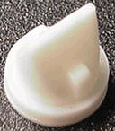
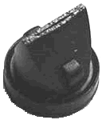
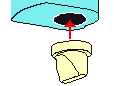
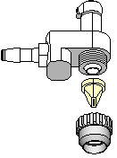

Replacing Duck-Bill Valve
This procedure describes how to replace the duck-bill valve and the wash-collar manifold.
| Action | When |
|---|---|
| Remove and inspect the duck-bill valve |
Wash-collar vacuum errors occur. Dark count errors occur. |
| Replace the duck-bill valve | Performing any Mod requiring it.
If the valve is torn, worn, or leaking. Performing scheduled maintenance procedures. |
| Remove and replace the wash-collar manifold |
Performing any Mod requiring it. The manifold is cracked or leaking. The probe guide is worn. The probe guide is too large for aspirate probe 1 and allows excessive air to leak into the manifold during backflush. The duck-bill valve does not seat correctly in the manifold because of an issue with the manifold. |
| Part | Status | Material | Identification |
|---|---|---|---|
| Duck-Bill Valve | Active
Use white duck-bill valves for all replacements. The black duck-bill valve is obsolete and no longer available. |
Silicone |
 |
| Obsolete June 2006 | Urethane |
 |
|
| Wash-Collar Manifold | Original design. Exists in a few early instruments | Acrylic |
 |
| Redesigned. Used in production | Acrylic |
 |